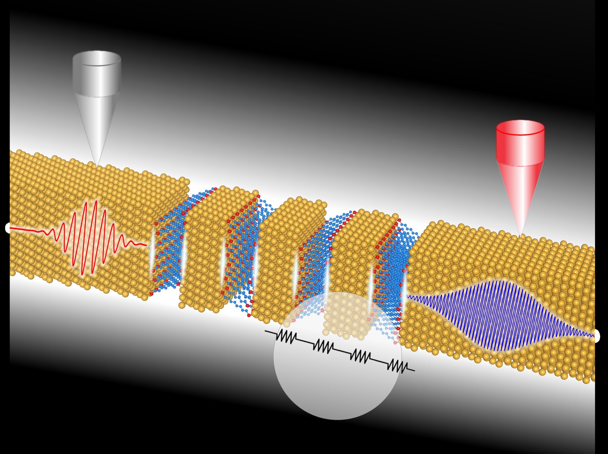
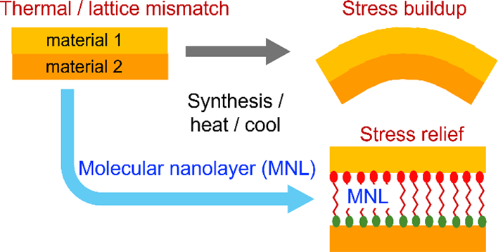
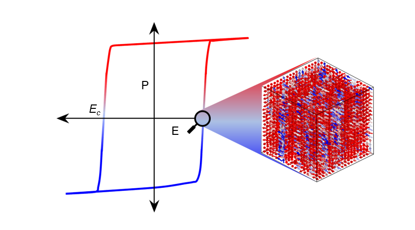

Keblinski Research Group
Department of Materials Science and Engineering · Rensselaer Polytechnic Institute
We use atomic-level simulation to understand how interfaces, nanostructures and disorder control heat flow, mechanical damping and phase change in materials.
Our researchPublicationsJoin usResearch
Our work focuses on the relationship between microstructure and material properties, including mechanical response, heat transport and mass transport, especially in interfacial and nanostructured materials. We apply classical atomistic simulation to study how atomic structure, bonding, surfaces, interfaces and junctions determine properties.
Thermal transport & viscoelasticity
Heat flow and viscoelastic damping in interfacial materials, nanolaminates, polymer nanocomposites, glasses and disordered solids.


Interfacial engineering
Computational exploration of interfacial structure and chemistry modification, particularly with small organic molecules, to tune interfacial mass and heat transport and thermomechanical properties.


Ferroelectric domain dynamics
Domain switching and surface effects in ferroelectrics such as BaTiO3 and KNbO3, with relevance to high-frequency devices.


Impact
Google Scholar, as of November 6, 2026.
People
Pawel Keblinski
Professor and Department Head, Materials Science and Engineering
Dr. Anoop Kushwaha
Postdoctoral researcher since 2023. Ferroelectric domain dynamics.
D. M. Saaduzzaman
PhD student since 2025. Interfacial modifications for property enhancement.
Adam Puchalski
Visiting PhD student from Warsaw University of Technology, since 2026. Structural and electronic properties of vanadium oxide.
Sumya Farzana
PhD student since 2026. Interfacial and bulk thermal conductivity.
Alumni (PhD)
| Name | Year | Thesis topic |
|---|---|---|
| Rajan Khadka | 2024 | Thermo-mechanical properties of soft-hard nanolaminates |
| Anirban Chandra | 2021 | Multiscale modeling of evaporation-condensation processes |
| Jihui Nie | 2019 | Thermal conduction in disordered materials |
| Wei Peng | 2018 | Viscoelastic and dynamic properties of polymer nanocomposites |
| Raghavan Ranganathan | 2016 | Atomistic mechanisms for viscoelastic damping in inorganic solids |
| Hasan Babaei | 2014 | Thermal transport in carbon nanotube/graphene phase change materials (with J. M. Khodadadi) |
| Kiran Sasikumar | 2014 | Nanoscale heat transfer and phase transformation around intensely heated nanoparticles |
| Meng Shen | 2013 | Tunable interfacial thermal conductance by molecular dynamics |
| Yan Wang | 2012 | Interfacial kinetics of phase change materials |
| Lin Hu | 2011 | Nanoscale interfacial materials for thermal transport applications |
| Natalia Shenogina | 2010 | Thermal coupling at aqueous and biomolecular interfaces (with S. Garde) |
| William J. Evans | 2008 | Mechanism of thermal transport in nanofluids (with J. Fish) |
| James Thomin | 2007 | Viscoelasticity of polymer nanocomposites (with S. Kumar) |
| Arun Bodapati | 2006 | Structural disorder and thermal transport in nanoscale solids |
| Tapan Desai | 2005 | Dynamics of polymer chains at solid interfaces (with S. Kumar) |
| Suchira Sen | 2005 | Viscoelastic behavior of nanoparticle-polymer melt composites (with S. Kumar) |
| Liping Xue | 2004 | Role of interfaces in thermal conductivity |
Master's alumni: Raj K. Dash (2002) and Robin Koshy (2002).
Postdoctoral associates
| Name | Years |
|---|---|
| Dr. Anoop Kushwaha | 2023 – current |
| Dr. Zhi Liang | 2012 – 2016 |
| Dr. Ming Hu | 2006 – 2009 |
| Dr. Sergei Shenogin | 2002 – 2010 |
| Dr. William J. Evans | 2008 – 2013 |
Selected Publications
- 2025Surface-induced effects in ferroelectric BaTiO3 thin films. A. K. Kushwaha, R. Khadka, P. Keblinski. Surfaces and Interfaces 56, 105589.
- 2025Thermal conductivity of compressed SiO2 nanoglasses: a molecular dynamics study. A. Hul, P. Keblinski, T. K. Pietrzak. Int. J. Heat Mass Transfer 241, 126761.
- 2024On the nature of thermal transport in organic/inorganic nanolaminates. R. Khadka, P. Keblinski. J. Appl. Phys. 135, 155303. Cover
- 2024Limits of high-frequency polarization switching in BaTiO3. H. Tamim, R. Khadka, P. Keblinski. Appl. Phys. Lett. 125, 102905.
- 2023Carbon-doped metal oxide interfacial nanofilms for ultrafast and precise separation of molecules. B. Sengupta, Q. Dong, R. Khadka, et al., P. Keblinski, G. Belfort, M. Yu. Science 381, 1098-1104.
- 2022Molecular dynamics study of domain switching dynamics in KNbO3 and BaTiO3. R. Khadka, P. Keblinski. J. Mater. Sci. 57, 12929-12946. Top July 2022 article
- 2018Stochasticity in materials structure, properties and processing: a review. R. Hull, P. Keblinski, et al. Appl. Phys. Rev. 5, 011302.
- 2017Structural vs. compositional disorder in thermal conductivity reduction of SiGe alloys. J. Nie, R. Ranganathan, Z. Liang, P. Keblinski. J. Appl. Phys. 122, 045104. Editor's pick
- 2014Nanoscale thermal transport. II. 2003-2012. D. G. Cahill, P. V. Braun, G. Chen, et al., P. Keblinski, et al. Appl. Phys. Rev. 1, 011305.
- 2014Thermal transport across a substrate-thin film interface: effects of film thickness and surface roughness. Z. Liang, K. Sasikumar, P. Keblinski. Phys. Rev. Lett. 113, 065901.
- 2013Bonding-induced thermal conductance enhancement at inorganic heterointerfaces using nanomolecular monolayers. P. J. O'Brien, S. Shenogin, J. Liu, M. Yamaguchi, P. Keblinski, G. Ramanath. Nature Materials 12, 118-122.
Selected from more than 200 peer-reviewed papers. Full list on Google Scholar.
Teaching
Computational Materials Design
MTLE 4500. Computational tools for materials design.
Thermodynamics of Materials
MTLE 4100, with graduate-level Advanced Thermodynamics (MTLE 6030/6964) covering classical and statistical methods.
Modeling of Materials
MTLE 4961/6964. Atomic-level and continuum modeling with Monte Carlo methods. Now a regular catalog course.
Science of Carbon
MTLE 6962, co-developed with P. M. Ajayan. Graphite, diamond, nanotubes and other carbon forms.
Energy, Environment and Economy
Cross-listed engineering and management course with interdisciplinary team projects, first offered in 2015.
Modeling and Analysis of Uncertainty
ENGR 2600. Computational labs linking random variables to physical systems.
Honors & Funding
- 2020Fellow, Materials Research Society
- 2017Marie Sklodowska-Curie Fellow, Poland-European Union
- 2014Fellow, American Physical Society
- 2013School of Engineering Research Excellence Award, Outstanding Team (RPI)
- 2010School of Engineering Research Excellence Award, Senior Faculty (RPI)
- 2004School of Engineering Research Excellence Award, Junior Faculty (RPI)
- 2002NSF CAREER Award
- 1996Alexander von Humboldt Junior Research Fellowship, Germany
Research funded by agencies including the National Science Foundation. Funded awards total about $7.5M attributed to Prof. Keblinski's share.
About Pawel Keblinski
Pawel Keblinski is Professor and Head of the Department of Materials Science and Engineering at Rensselaer Polytechnic Institute, where he joined as Assistant Professor in 1999. He served as Department Head in 2015-2017 and again from 2019 to the present. He is an Associate Editor of the Journal of Applied Physics (since 2016).
- 1995Ph.D., Physics, Pennsylvania State University
- 1990M.S., Physics, Warsaw University
- 1996-99Postdoctoral researcher at Argonne National Laboratory; Assistant Scientist at Forschungszentrum Karlsruhe
- 2007-20Visiting Professor appointments: National University of Singapore, University of Lille, University of Lyon, Institute of High-pressure Physics, Polish Academy of Sciences
Contact & Join Us
We welcome inquiries from motivated students and postdoctoral researchers interested in computational materials science.
Email: keblip@rpi.edu
Address: Department of Materials Science and Engineering, Rensselaer Polytechnic Institute, Troy, NY 12180
Links: Google Scholar · MS&E Department